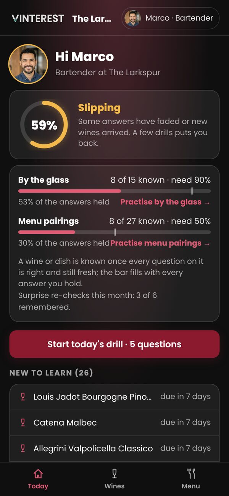

Vinterest for teams trains a restaurant's staff on its own wine list and menu, and shows the manager who's ready. This is the console, on a real list, with demo sales.

Dashboard. Team readiness against each role's minimum, who's overdue, who's slipping, what the floor knows least. Every number opens the people or wines behind it.
No XP, no streaks. A question comes back on its own schedule, sooner after a confident wrong answer, later as it holds. About one in ten is an unannounced re-check.

Where they stand against their role's minimum, by the glass and by the menu, and the drill.

Recognise, recall, apply at a table, contrast with the most similar wine. They say how sure they are first.

What to say to a guest, what it tastes like with body and acidity explained, grape and place, the dishes it suits.

Best with, the by-the-glass pick, and the one to steer guests away from, with the reason.

A photo of the list, or one bottle from its label: card, pairings and drinking window in about 45 seconds.
Photos or a PDF of the list and menu. A review of what's new, gone and changed. Nothing reaches staff until Publish.
A card per wine grounded in checked facts, pairings per dish, a drinking window per vintage.
Four rungs, a review schedule per question, re-checks, readiness against each role's minimum.
Dashboard, Team, Wines, Menu, Upload, Integrations and Admin, on a tablet or a laptop.
A CSV from any till. Till items mapped to wines once. Sales set what's learnt first and never move readiness.
Self-serve OAuth, orders and catalogue, nightly. Toast through its nightly export; Lightspeed and Clover after.
Each person on their own phone, each site its own list, the console on the web, billing per site.
A spreadsheet import, a label scan on delivery, "running low" beside a wine the floor is pushing.
A guest at a table, played by Vinny, asking about the list; the buyer's list analysis.
Send a photo of your wine list. We'll show you the cards, the drill and the console built from it.
In pilot now. Accounts and billing come next; the pilot runs on one device per restaurant.